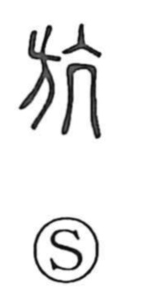

航

Uncategorized
Kun: | On: kou
to navigate ・ to sail ・ to cross
Explanation
航 is a phono-semantic compound: the boat element 舟 provides the idea of a vessel, while 亢 (kō) serves as the sound component and, originally associated with the throat (as in 頏), conveys the sense of something straight or upright. In earlier times people crossed rivers on floating bridges made by linking rafts, and as boats replaced such rafts, this graph came to express going straight across a river by ship. From that image of setting a direct course and traversing a span, the character came to mean sailing and navigation, and in modern usage extends to crossing the sky, as in 航空, flight through the air.